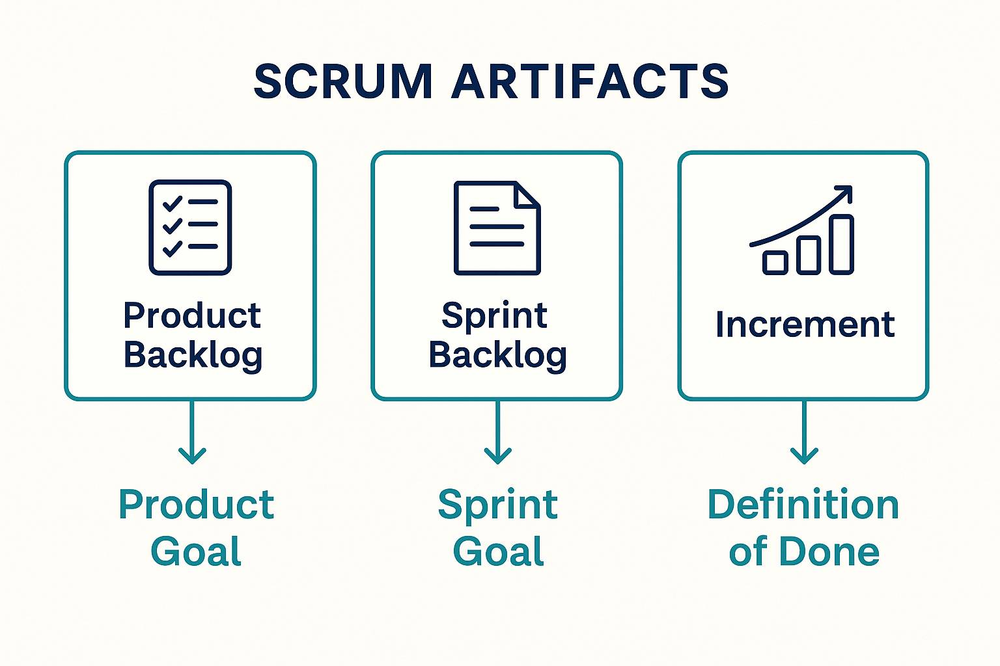

- What is an artifact? : An artifact means work or value. It varies depending on what progress is measured.
- Product backlog: The artifact that is measured, or the work that is being measured is the Product Goal.
- Sprint backlog: The artifact that is measured, or the work that is being measured is the Sprint Goal.
- Increment: For the increment, the artifact is the “Definition of Done”.
Citation:
Schwaber, Ken, and Jeff Sutherland. The Scrum Guide: The Definitive Guide to Scrum: The Rules of the Game. Nov. 2020, Scrum Guide.